Who built the first computer?
We could argue that the first computer was the abacus or its descendant, the silde rule, invented by William Oughtred in 1622
. But the first computer resembling today's modern machines was the Analytical Engine, a device conceived and designed by British mathematician
Charles Babbage between 1833 and 1871 . |
 |
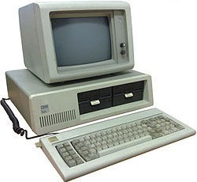 |
Brief History Of Computer.The as we know it today had its beginning with a 19th century
English mathematics professor name Charles Babbage.He designed that Analytical Engine and it was this design that the basic framework
of the computers of today are based on. ..It was called the Atanasoff-BerryComputer (ABC)... |
When was the first computer invented?
There is no easy answer to this question due to the many different classifications of computers.
The first meachanical computer,created by Charles Babbage in 1822,doesn't really resemble what most would consider a computer today.Therefore,this
document has been created with a listing of each of the computer firsts,starting with the Didderence Engine and leading up to the computers we use today.
Note:Early inventions which helped lead up to the computer,such as the abacus,calculator, and tablet machines, are not accounted
for in this document. |
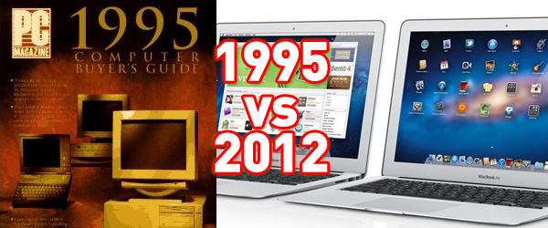 |
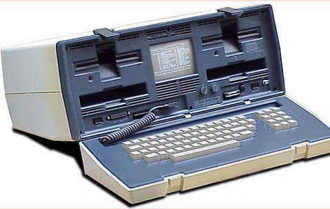 |
When was the word "computer" was first used?
The word "computer" was first recorded as being used in 1613 and originally was used to describe a human who performend
calculation or computations.The definition of a computer remained the same until the end of the 19th century, when the industrial
revolution gave rise to machines whose primary purpose was calculating. |
First mechanical computer or automatic computing engine concept
In 1822,Charles Babbage concepttualized and began developing the Difference Engine ,was capable of computing
several sets of numbers and making hard copies of the results.Babbage received some help with development of the Difference Engine
from Ada Lovelace , considered by many to be the first computer programmer for her work and notes on the Difference Engine.
Unfortunately,because of funding, Babbage was never able to complete a full-scale functional version of this machine.In June of 1991
, the London Science Museum completed the Difference Engine No.2 for the bicentennial year of Babbage's birth and later completed the printing mechanism
in 2000 . In 1837 , Charles Babbage proposed the first general mechanical computer, the Analytical Engine
.The Analytical Engine contained an Arithmetic Logic Unit (ALU),basic flower control, punch cards (inspired by the
Jacquard Loom) , and intergrated memory.It is the first general-purpose computer concept.Unfortunately, because of funding issues, this
computer was also never built while Chaarles Babbage was alive.In 1910 Henry Babbage,Charles Babbage's youngest son, was able to
complete a portion of this machine and was able to perform basic calculations. |
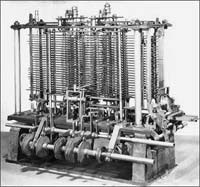 |
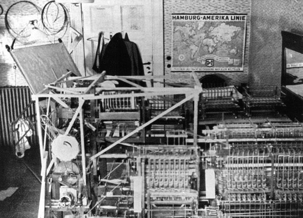 |
First programmable computer
The Z1 was created by German Konrad Zuse in his parents' living room between 1936 and
1938 . It is considered to be the first electromechanical binary programmable computer, and the first really functional modern
computer. |
First concepts of what we consider a modern computer
The Turing machine was first proposed by Alan Turing in 1936 and become the foundation for
theories about computing and computers.The machine was a device that printed symbols on paper tape in a manner that emulated a person following a
series of logical instructions.Without these fundsmentals, we wouldn't have the computer we use today. |
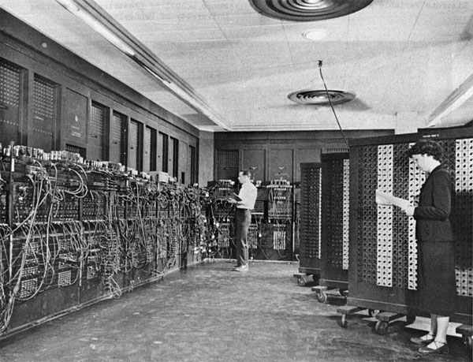 |
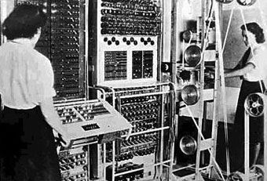 |
The first electric programmable computer
The Colossus was the first electric programmable computer, developed by Tommy Flowers , and first demonstrated in
December 1943 . The Cloossuswas created to help the British code breakers read encrypted German messages.
|
The first stored program computer
The early British computer knows as the EDSACis considered to be the first stored program electronic computer. The computer performed
its first calculation on May 6 1949 and was the computer that ran the first graphical computer game, nicknameed "Baby".Around the same time, the Manchester Mark 1was another computer
that could run stored programs. Built at the Victoria University of Manchester, the first version of the Mark 1 computer became operational in April
1949 . Mark 1 was used to run a program to search for Mersenne primes for nine hours without error on June 16 and 17 that
same year. |
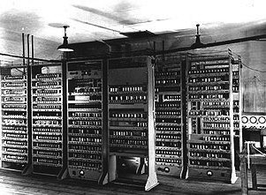 |
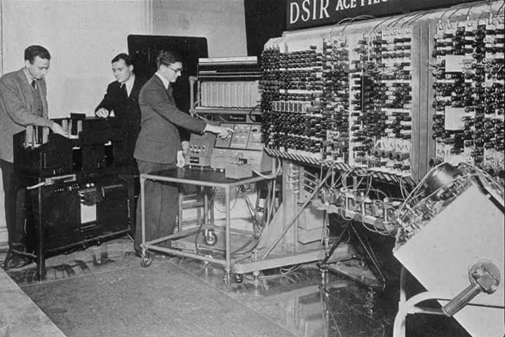 |
The fist computer company
The first computer company was the Electronic Controls Company and was founded in 1949 by J. Presper Eckert and
John Mauchly, the same individuals who helped create the ENIAC computer. The company was later renamed to EMCC or Eckert-Mauchly Computer Corporation
and released a series of mainframe computers under the UNIVAC name. |
First computer with program stored in memory
First delivered to the United States government in 1950,the UNIVAC 1101 or ERA 1101 is considered to be the first computer
that was capable of storing and running a program from memory. |
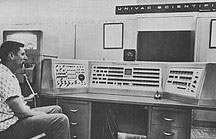
|
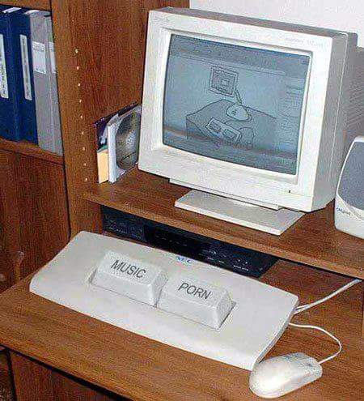
| First commercial computer
In 1942,Konrad Zuse begin working on the Z4 that later became the first commercial computer.The computer was sold to Eduard Stiefel,
a mathematician of the Swiss Federal Institute of Technology Zurich on July 12,1950. |
The first computer with RAM
MIT introduces the Whirlwind machine on March 8, 1955 , a revolutionary computer that was the first digital computer with
magnetic core RAM and real-time graphics.The TX-0(Transistorized Experimental computer) is the first transistorized computer to be demonstrated
at the Massachusetts Institute of Technology in 1956 . |
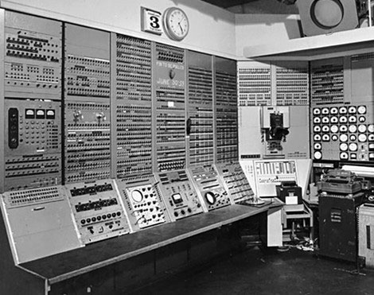 |
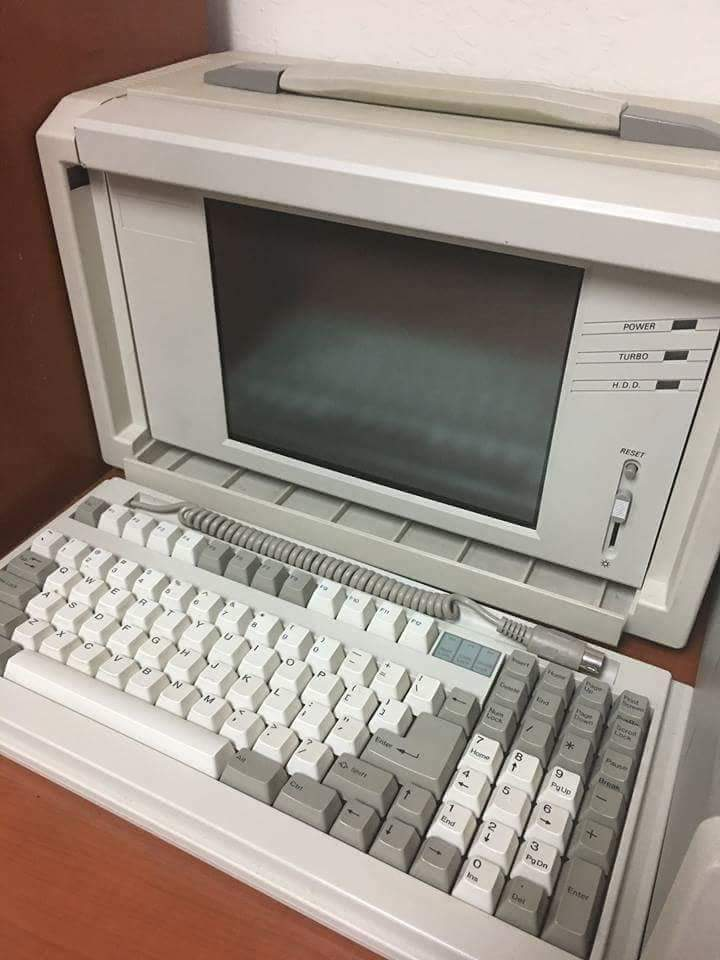 |
The first desktop and mass-market computer
In 1964 , the first desktop computer, the Programma 101 ,was unveiled to the public at the New York World's Fair.
It was invented by Pier Giorgio Perotto and manufactured by Olivetti.About 44,000 Programma 101 computers were sold, each with a price tag of
$3,200.In 1968,Hewlett Packard began marketing the HP 9100A,considered to be the first mass-marketed desktop
computer |
|